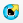

Before publishing¶
This part of the documentation describes the steps that need to be done before publishing a project from QGIS on Gisquick platform. It is also assumed that the user has a project with the required layers ready in QGIS and wants to publish it. To learn more about creating projects in QGIS, see official QGIS documentation at https://www.qgis.org/en/docs/index.html.
Creating Gisquick account¶
First of all, a new user account has to be created on a publication server (for example on Gisquick demo publication server as it is described below). This can be done by filling in the registration form available at https://demo.gisquick.org/.

After clicking on CREATE ACCOUNT button a confirmation e-mail should
be sent to a given e-mail address.

Afterwards, a new user is notified about successful signing-in.

After clicking on CONTINUE button, the new user will be redirected to
the publication server welcome screen.

The user can log in with username and password. After successful login, Gisquick loads user’s profile page which includes a list of already published projects. After the very first login or in case that user hasn’t published any project yet, only the message appears stating how to proceed.

In order to publish a NEW PROJECT from QGIS, a QGIS Gisquick plugin must be connected, see chapter below.
QGIS Gisquick plugin¶
In order to publish a project from QGIS, the QGIS Gisquick plugin needs to be
installed and connected. The required plugin is available to download for 64-bit OS
(Windows, Linux, MacOS). Click on GET PLUGIN and copy the link for your OS.
{kind=link}
In QGIS, open tab Plugins and choose Manage and Install Plugins. Continue to Settings tab and click Add.
{kind=link}
Paste the copied link for Gisquick plugin in here.
Then go to the All tab, search for Gisquick and hit install (see GIF below).
The plugin is now installed in QGIS, a new icon  should also appear in QGIS plugins toolbar.
{kind=link}
Note
The plugin link for the repository is available at https://gisquick.org/plugin.
{kind=link}
Note
The difference between GISQUICK and GISQUICK (with dbhash) is that the dbhash SQLite version is recommended when working with the Geopackage format.
The plugin is installed but not yet connected to the Gisquick publication server.
To connect to the server, click the icon in QGIS toolbar or go to tab Web - Gisquick - Configure.
{kind=link}
Fill in the Gisquick server URL, username and password. You are now connected
to the publication server and ready to publish projects from QGIS. If the
server URL, username or password is filled in incorrectly, the message Failed to connect! is displayed
when you try to connect to Gisquick server (by clicking the icon  ).
The information can be corrected right here in the
).
The information can be corrected right here in the Configure tab.
{kind=link}